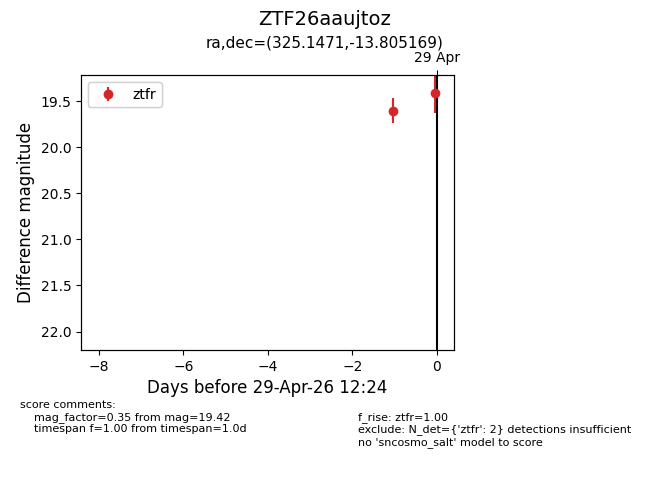
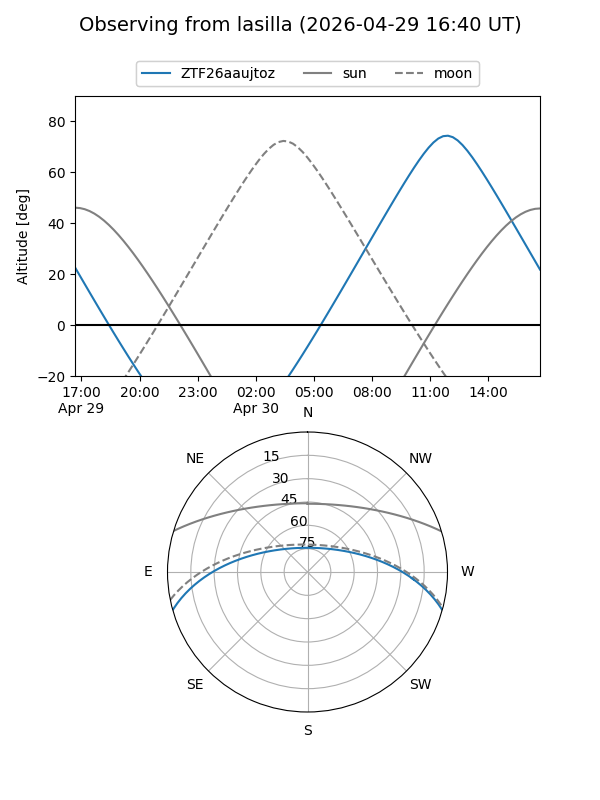
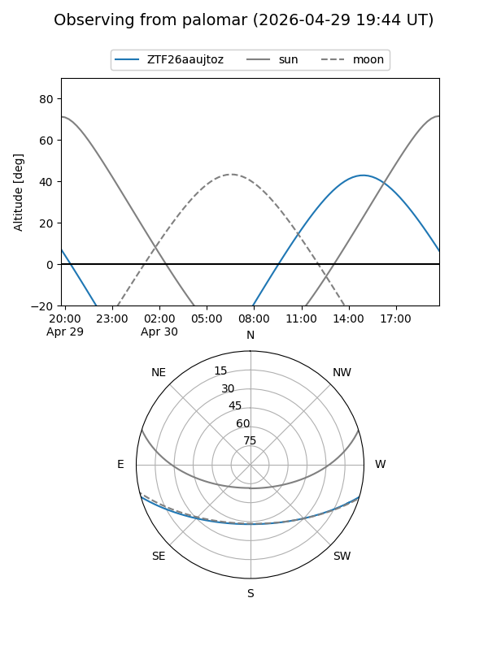
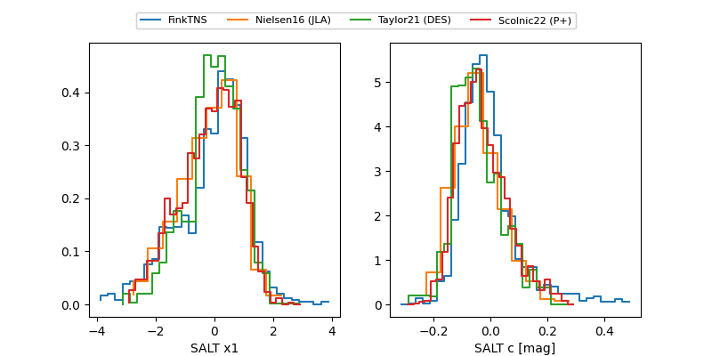

ZTF26aaujtoz
Target ZTF26aaujtoz at 2026-04-29 12:28
Aliases and brokers:
FINK: link
Lasair: link
ALeRCE: link
alt names
ZTF26aaujtoz (ztf,fink_ztf)
Coordinates:
equatorial (ra, dec) = 325.1471,-13.80517
equatorial (HMS+DMS) = 21:40:35.30,-13:48:18.61
galactic (l, b) = (39.7250,-43.65700)
Flags:
Photometry:
last ztfr=19.42
2 ztfr detections
Lightcurve

Visibility


Additional plots
